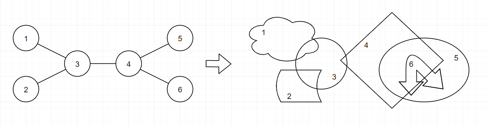
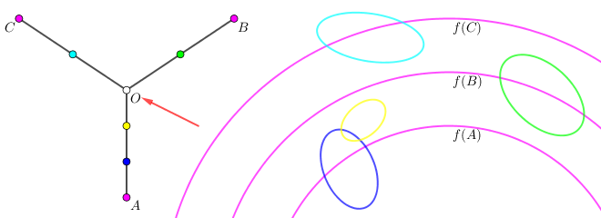
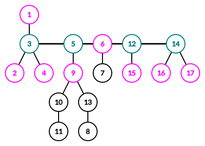
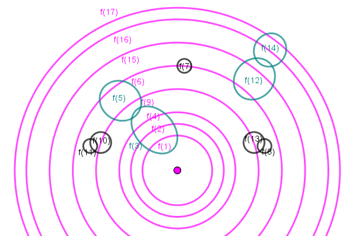

给定一个 $n$ 个顶点的树 $T = \left( V, E \right)$，你需要构造一个 $V$ 到平面单连通闭区域的映射 $f$，满足：
(ps: 其中 $\partial D$ 表示区域 $D$ 的边界)
定义一列区域 $a_1, a_2, \cdots, a_k$ 是嵌套的，当且仅当 $a_1 \supset a_2 \supset \cdots \supset a_k$。
定义树上的一个点列 $v_1, v_2, \cdots, v_k$ 是嵌套的，当且仅当 $f \left( v_1 \right), f \left( v_2 \right), \cdots, f \left( v_k \right)$ 是嵌套的。
举个例子，在上图中，点列 $\left[ 5, 6 \right]$ 是嵌套的。
容易证明，对任意一棵树，满足条件的映射 $f$ 必存在。
现在，你需要对所有可能的映射，求出 $T$ 中嵌套点列的长度的最大值。
第一行包含一个正整数 $n$ ($3 \leq n \leq 10^5$)，表示树的点数。
接下来 $n - 1$ 行，每行两个正整数 $a_i, b_i$ ($1 \leq a_i < b_i \leq n$)，描述树上的一条边。保证这 $n - 1$ 条边恰好构成一棵树。
输出一行一个整数，表示 $T$ 中嵌套点列长度的最大可能值。
设 $S$ 为 $T$ 中最长的嵌套点列。一个显然的必要条件是 $S$ 是 $T$ 的一个独立集，但容易构造知它并不是一个充分条件。
首先，$S$ 中所有点的像 (单连通闭区域)，由拓扑结构知它们可以同胚于若干个嵌套的同心圆，半径依次递减。
而 $\bar S$ 中的任意一个单连通闭区域，与 $S$ 中同心圆有交集的，下标一定是连续的一段。
考虑 $S$ 中点构成的虚树，下面证明，这个虚树是一个 "毛毛虫" (即存在一条 "主链"，使得任意一个点到主链的距离不超过 $1$)。
反之，虚树中一定会存在如下的 pattern：
即有一个中心点 $O$ 和点 $A, B, C$，满足 $\min \left\{ \operatorname{dist} \left( O, A \right), \operatorname{dist} \left( O, B \right), \operatorname{dist} \left( O, C \right) \right\} \geq 2$。
不妨设 $f \left( A \right), f \left( B \right), f \left( C \right)$ 的分布如下图所示：
注意到 $AO$ 段对应的所有区域不能和圆 $f \left( B \right)$ 相交，因此它们含于 $f \left( B \right)$ 内部；同理，$CO$ 段对应的所有区域也不能和圆 $f \left( B \right)$ 相交，因此它们只能在 $f \left( B \right)$ 外部 (或包含整个 $f \left( B \right)$)。
现在考察这个 $O$ 点，因为 $\operatorname{dist} \left( O, B \right) \geq 2$，因此 $f \left( O \right)$ 也不能与 $f \left( B \right)$ 相交，而它现在既要与 $f \left( B \right)$ 内部的一个区域相交，又要与 $f \left( B \right)$ 外部的一个区域相交，由 Jordan 曲线定理，这样的单连通区域显然是不存在的。
故得出矛盾，从而假设不成立，即虚树构成一个 "毛毛虫"。
当然，这也只是一个必要条件，我们还得加上 "$S$ 是独立集" 这个条件，这样一来，整个条件就是充要条件了，证明也不难：
设 "毛毛虫" 的 "主链" (直径) 为 $v_1 - v_2 - \cdots - v_k$，对于每个 $S$ 中的点，定义它的权值为它在主链中的位置 (如果它在主链上) 或它相邻的点在主链中的位置 (如果它不在主链上)，然后按照权值从小到大 (或从大到小) 的顺序构造同心圆。
那么，对于主链上其它点，显然它相邻的点与 $S$ 的交集恰好是若干个连续的同心圆，从而可以构造出对应的集合。
对于既不在 $S$ 中也不在主链上的点，这些点的答案不会产生影响，于是只需要任意构造即可，由于各个子树之间独立，于是它们容易构造。
举个例子：
对于上面这棵树，我们取 $S = \left\{ 1, 2, 4, 6, 9, 15, 16, 17 \right\}$，容易验证它是一个独立集，且虚树构成 "毛毛虫" (直径为 $3 - 5 - 6 - 12 - 14$)，我们按照 $\left[ 1, 2, 4 \right], \left[ 9 \right], \left[ 6 \right], \left[ 15 \right], \left[ 16, 17 \right]$ 的顺序安放同心圆，则剩下的点可以恰好构成一组合法解，如下图：
于是下面的任务就是寻找一个最大的 "毛毛虫" 型 "独立集"。
注意到 "毛毛虫" 的话有点像链状结构，容易类比到求 "直径"。求直径通常有两种方法：
其一是两遍 dfs，这种方法用到树的性质比较多，且边权不能有负数，因此难以推广。
其二就是 DP 了，这种方法用到树的性质比较少，可以应用于负数边权，而且还可以轻松推广到仙人掌等更多的图。
考虑树形 DP 求直径的方法：即用 $f_i$ 表示 $i$ 到 $i$ 子树内点的距离的最大值，然后在更新 $f_i$ 的同时顺便更新答案 (这样就不用记什么最大次大值了)。
在这里也是类似的，不过同时要兼顾到 "独立集" 的条件，因此我们采用类似独立集的 DP 方法：多加一维表示该点有没有被选择。
不难发现，在最优解中，若一个点在主链中但不在 $S$ 中 (即上图中标记为青色)，那么它的所有相邻节点要么是粉色)。
其次，主链上的点要么是青色，要么是粉色，不可能有黑色点。
于是，就可以 DP 了：用 $f_v$ 表示只考虑以 $v$ 为根的子树，粉色点的数量的最大值，其中 $v$ 为青色点且在主链上)；$g_v$ 则表示 $v$ 为粉色点且在主链上的答案 (由于某些原因，这里我们不计入 $v$ 点的贡献)。
考虑 $g_v$，若 $v$ 是粉色点。又由于粉色点 (即 $S$ 集合) 要构成独立集，因此 $v$ 在主链方向上的子节点 $c$ 不能是粉色点，而主链上的点要么是粉色点，要么是青色点，因此 $c$ 必须是青色点。
因此这部分的转移为：$$ g_v \uparrow f_c \left( c \in child \left( v \right) \right) $$
等价地，$g_v = \max\limits_{c \in child \left( v \right)} f_c$。
接下来考虑 $f_v$，若 $v$ 是青色点，则它的子节点有两种选择：粉色点或青色点。
首先，由于它是青色点，因此它的邻居 (除了主链上的点以外) 都是粉色点，于是会带来 $d \left( v \right) - 2$ 个粉色点。
如果子节点 $c$ 是粉色点，那么有 $$ f_v \uparrow \left( g_c + 1 \right) + \left( d \left( v \right) - 2 \right) $$
如果子节点 $c$ 是青色点，那么就有 $$ f_v \uparrow f_c + \left( d \left( v \right) - 2 \right) $$
考虑更新答案，同样分三种情况讨论：
$v$ 是粉色点：
此时，它的两个子节点必须都是青色点，故更新 $g_v + f_c + 1$。
$v$ 是青色点，且 $c$ 是粉色点：
此时，它的两个子节点必须都是青色点，故更新 $f_v + g_c + 1$。
$v$ 是青色点，且 $c$ 也是青色点：
此时，它的两个子节点必须都是青色点，故更新 $\left( f_v - 1 \right) + f_c + 1$。
最后，如果必要的话对根节点进行一些特判，就可以 (像直径一样的) 求出最终答案，总时间复杂度 $O \left( n \right)$。
#include <bits/stdc++.h>
const int N = 100054, M = N * 2;
int n, E = 0, ans;
int to[M], first[N], next[M], deg[N];
int p[N], f[N], g[N];
inline void up(int &x, const int y) {x < y ? x = y : 0;}
inline void addedge(int u, int v) {
to[++E] = v, next[E] = first[u], first[u] = E, ++deg[u];
to[++E] = u, next[E] = first[v], first[v] = E, ++deg[v];
}
void dfs(int x) {
int i, y;
for (i = first[x]; i; i = next[i])
if ((y = to[i]) != p[x])
p[y] = x, dfs(y),
up(ans, f[x] + f[y]),
up(ans, f[x] + g[y] + 1),
up(ans, g[x] + f[y] + 1),
up(f[x], deg[x] - 2 + f[y]),
up(f[x], deg[x] - 1 + g[y]),
up(g[x], f[y]);
}
int main() {
int i, u, v;
scanf("%d", &n);
for (i = 1; i < n; ++i) scanf("%d%d", &u, &v), addedge(u, v);
dfs(1), printf("%d\n", ans);
return 0;
}
坑1：在计算根节点的时候由于 $d \left( v \right)$ 本身就减少了 $1$，因此这个特判不用写也是正确的。
坑2：DP 时注意转移顺序，应先更新答案再更新 $f_v, g_v$。